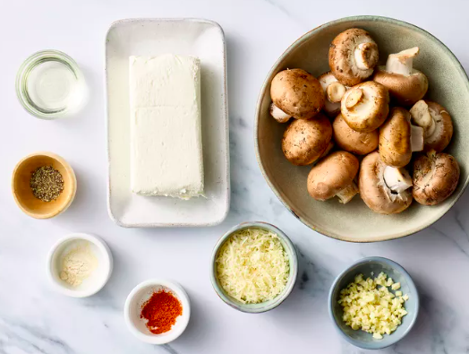

Gather the ingredients. Preheat the oven to 350 degrees F (175 degrees C). Grease a baking sheet with cooking spray.

Clean mushrooms with a damp paper towel. Carefully break stems from mushrooms. Finely chop stems and set caps aside
Heat oil in a large skillet over medium heat. Fry chopped mushroom stems and garlic in hot oil until any moisture has disappeared, taking care not to burn the garlic, 3 to 5 minutes.
Spread mushroom mixture into a bowl to cool completely, about 10 minutes. Stir cream cheese, Parmesan cheese, black pepper, onion powder, and cayenne pepper into the cooled mushroom mixture until very thick and completely mixed.
Use a small spoon to fill each mushroom cap with a generous amount of stuffing. Arrange stuffed mushrooms on the prepared cookie sheet.
Bake in the preheated oven until piping hot and liquid starts to form under each cap, about 20 minutes.
ENJOY YOUR MEAL